Bem-vindo ao GRIOT- Curitiba
Pérola deste planaltoToda faceira e bonita GRIOT!
Curitiba é uma cidade marcada pela pluralidade cultural e pelas contribuições de diferentes povos para sua formação. A história da população negra faz parte dessa trajetória, presente na cultura, nas artes, na educação e em diversos espaços da sociedade. Valorizar essa memória é reconhecer seu papel na construção da capital paranaense e promover o respeito à diversidade e à igualdade racial.
![Vista horizontal,
ao ar livre e diurna da estufa metálica do Jardim Botânico de Curitiba,
com foco na arquitetura e no paisagismo. No primeiro plano, um denso canteiro de
flores rosa-escuras e vermelhas se estende a partir da parte inferior, servindo como
um caminho visual até o centro. Ao lado desse canteiro, há caminhos de terra batida de
tom marrom-claro, delimitados por cercas vivas e gramados bem aparados em verde-vivo.
No plano médio, a icônica estufa em estrutura metálica branca e vidros transparentes se
destaca no centro. A construção possui três domos abobadados na parte superior e formas
arredondadas na base. Na escadaria e nos arredores da entrada da estufa, várias pessoas
passeiam vestidas com roupas casuais de verão. Ao fundo, uma densa faixa de árvores verdes
contorna a área da estufa. O céu ocupa a metade superior, apresentando um tom azul-intenso
com grandes nuvens brancas e volumosas espalhadas, iluminadas pela luz direta do sol.
O elemento possui cantos arredondados sobre um fundo claro.](../mainStyle/assets/images/Curitiba.webp)
Conteúdos que valorizam a Cultura Negra
Acesse a cultura afro-brasileira curitibana.
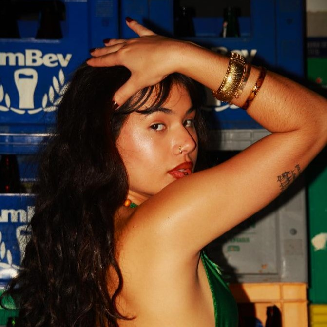
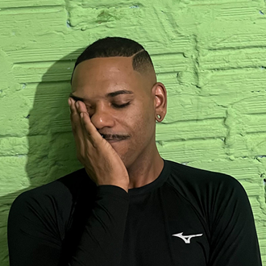
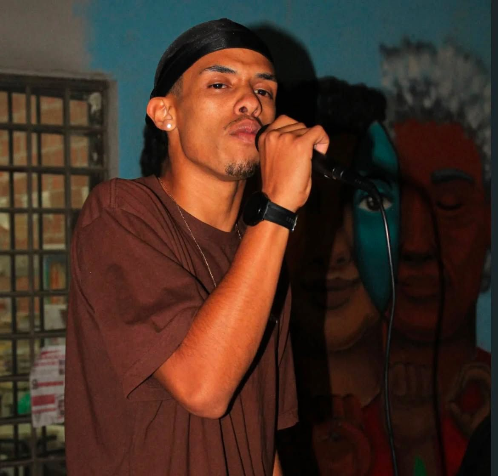
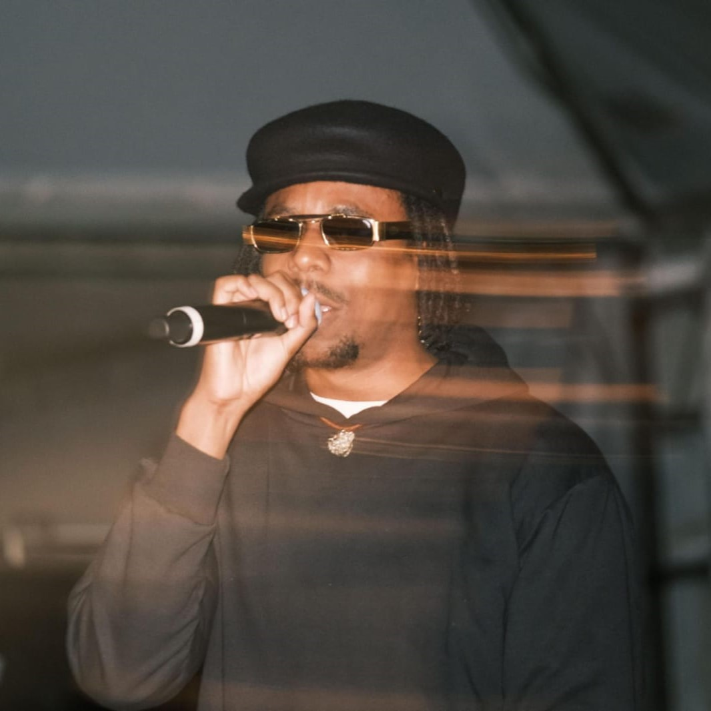
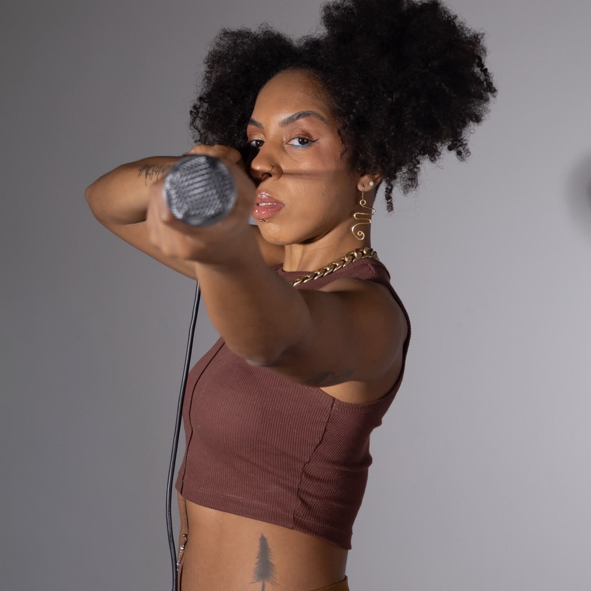
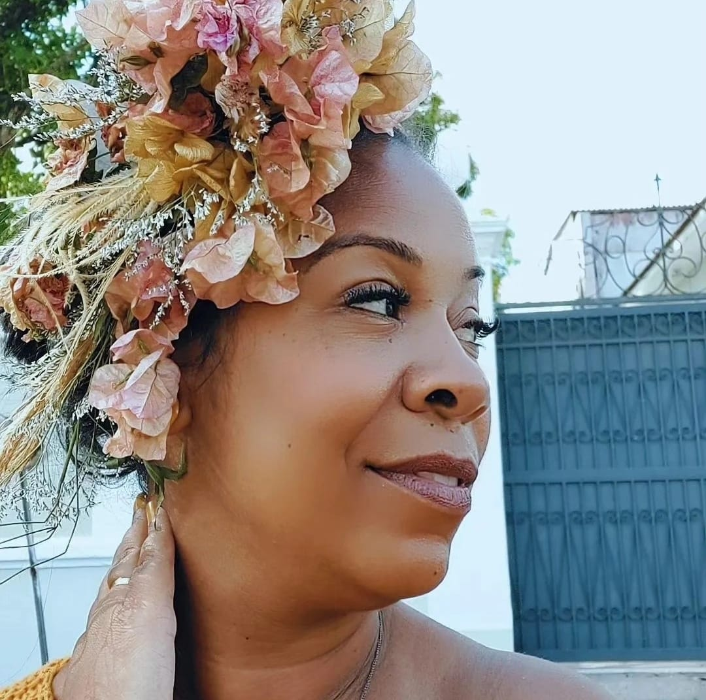
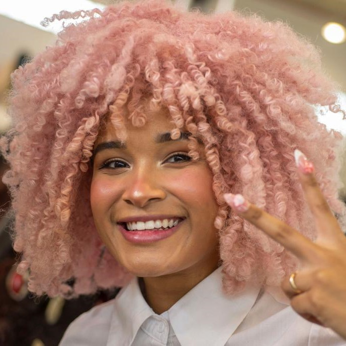
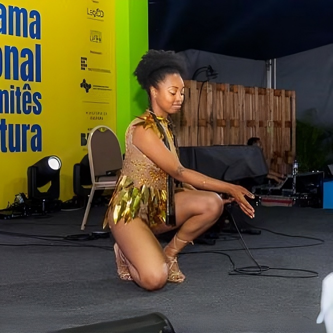
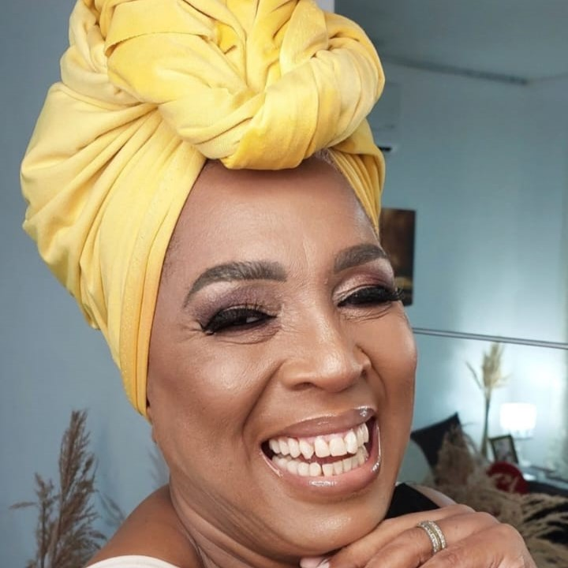
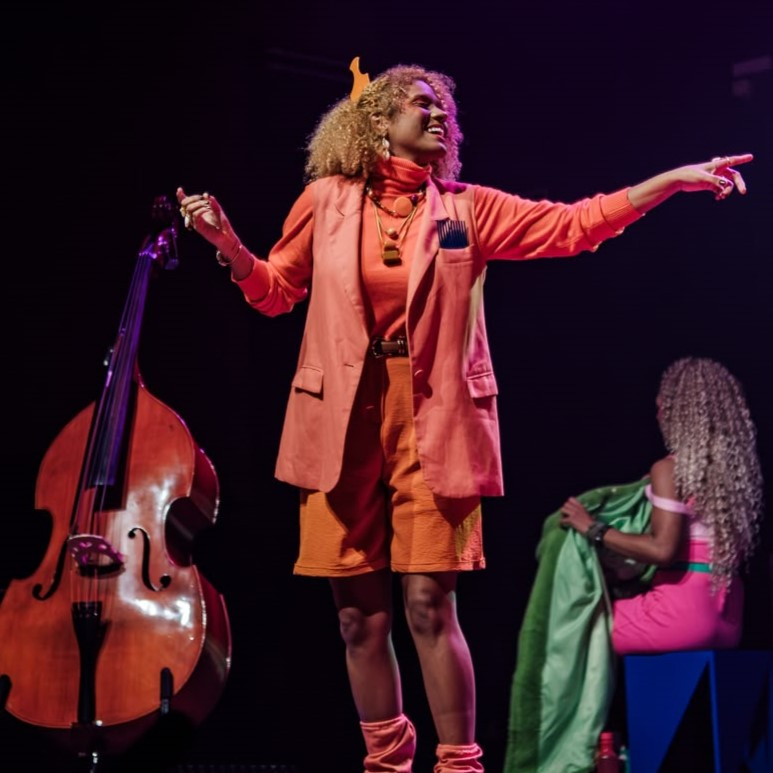
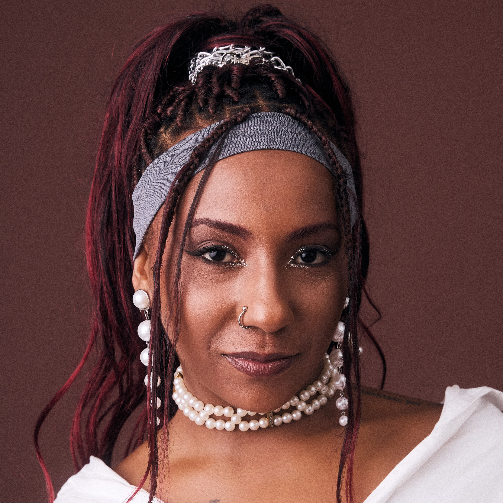
Músicas
Textos


![Capa do livro [Nome do Livro]](https://cdhjzkmlucahtllfpdlx.supabase.co/storage/v1/object/public/Obras%20locais/Curitiba/Capas/falta.png)
![Capa do livro [Nome do Livro]](https://cdhjzkmlucahtllfpdlx.supabase.co/storage/v1/object/public/Obras%20locais/Curitiba/Capas/godbless.png)
![Capa do livro [Nome do Livro]](https://cdhjzkmlucahtllfpdlx.supabase.co/storage/v1/object/public/Obras%20locais/Curitiba/Capas/meusom.png)
![Capa do livro [Nome do Livro]](https://cdhjzkmlucahtllfpdlx.supabase.co/storage/v1/object/public/Obras%20locais/Curitiba/Capas/porta.png)
![Capa do livro [Nome do Livro]](https://cdhjzkmlucahtllfpdlx.supabase.co/storage/v1/object/public/Obras%20locais/Curitiba/Capas/toni.png)
Nome Pessoa
Nascimento
Biografia